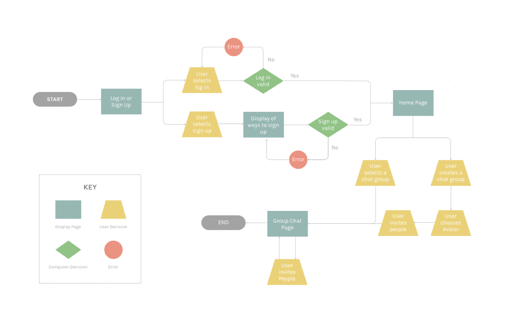
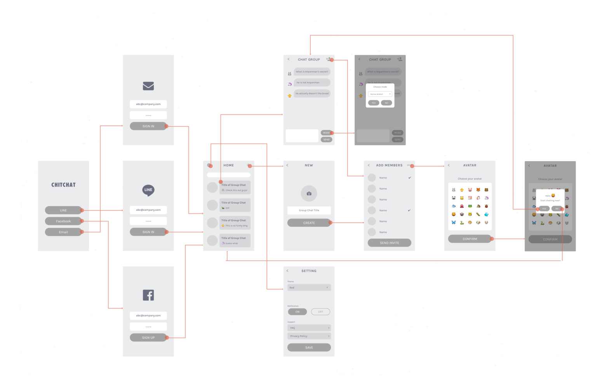

This project started as my internship project at LINE, with the aim to combat challenges LINE users are facing. However, due to time constraints, it transformed to my personal project after the internship ended. My role in this project was designer, in which I use research to identify design opportunities, envision the preferred future, and translate it into screen designs.

Since the highly-publicized Dentsu employee suicide, Japan's work culture has been one of the important issues the country is facing. While some companies are trying to solve it by restricting working hours, we imagined what we would do to combat this problem with our skills - research, design and programming.
When we looked into the issue, we discovered that there were multiple aspects to it. For example, one of the aspects is shared responsibility, which simply means if something goes wrong, the responsibility is shared by all who were in the team. Due to this Japanese culture, the idea of causing trouble for others keeps them working. Another aspect we found is harmony. Japan is a harmonious society with low rates of litigation, crime, and divorce. People value group goals more than immediate personal gain. Due to this societal expectation, people tend to hide their true feelings in order to be polite. This also keeps them working even though it's overtime.
We found out that there were many pieces forming this massive problem, which helped us understand our problem space better, but then we thought "hey, this is too big of a scope... we can't magically solve such a massive problem just by designing a product..."
In order to choose which aspect of the issue to focus on in this project, we looked for a common ground in user goals and business goals. One finding from our research was the lack of honest communication. In Japan, manners are often about caring about the impact of your actions rather than displaying your true feelings.
LINE is a company that builds the most used communication application in Japan, we saw a common ground there. There is an opportunity we could use to make a difference in the way people communicate. Based on the decision, I defined our goal to be,

As a team, we took some time to come up with some ideas to tackle the problem we identified. We sketched out ideas on our individual notebook, gathered as a group, and shared each of our ideas. Through this process, one idea, anonymous chat application, was determined.


We looked into anonymous chat apps that are currently on the market. Main finding here was that they are facing some issues due to its anonymity. One app we looked into was called Yikyak, an app that allows users to submit gossips at their school. This app actually got shut down recently because people were taking advantage of being anonymous and hurting other people with their words. Due to this discover, a great deal of our effort was focused on avoiding this negativity.
I started making user flow and wire flow here as we were running out of time. These were mainly for communicating my ideas to the engineer in my team as well as for the material for our presentation at the end of the internship.
We distributed our prototype to a team and asked them to use it for a day so we can see if Chit Chat is making a difference - solving the problem. At the end of the day, we compared the number of messages sent on Chit Chat and immediately got confirmation that it is making a difference because there were 428 messages sent in our prototype while there were only 93 messages sent in the usual group chat.
Although I could see Chit Chat was doing a great job, I also saw some improvements that can be made. From looking at the conversation on our prototype, I found out that the number of message increased when someone in the chat group made a joke or asked questions. However, when there aren’t any conversation starters, the chat group was inactive. This led us add two more features, chatbot & avatar.

Chatbot
To avoid the inactivity, I incorporated chatbot that sends messages when there were no activities for a certain amount of time. When the chatbot recognizes negative words, it sends messages to change the atmosphere of the conversation.

Avatar
To make the chat atmosphere more cheerful, I also decided to ask users choose their avatars (emoji).
This is a project that I felt very passionate about while working on it because it tackles the meaningful problem of work culture in Japan. Although it might be just a tiny step towards solving this huge problem, I was able to gain many lessons. Here are few main lessons:
Always justify every decision I make. During this project, we had two mentors who always asked us "why" to our decisions, and it helped us make our abstract idea more concrete and move to the right direction.
User experience of chat app highly depends on what users actually talk. As a designer, my goal was to make their experience as positive as possible. However, I noticed that compared to other types of app, chat app is difficult because their experience relies on what users talk about and how each messages interact with.

Fun note:
LINE cafe has this really cute coffee :)